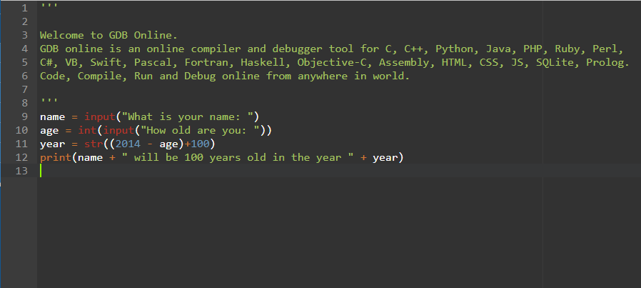
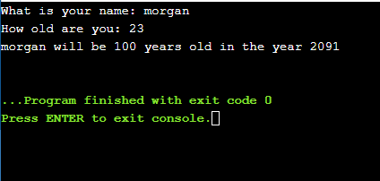

HW3 <<
Previous Next >> 2.奇數或偶數 odd or even
1.輸入字元 character input
字符輸入 輸入字符串類型int 向觀眾校準練習將是一項艱鉅的任務，所以我請您忍受練習是否太容易或太難。 每週都會進行一次民意測驗，您可以單擊以討論該練習是太容易還是太難了，希望在幾週後，我會把水平調到正確的水平。 讓我們開始吧！ 如果您需要額外的挑戰，我將從練習開始，並在以後進行討論。
Character Input
input strings types int
Calibrating the exercises to the audience is going to be a challenging task, so I ask you to bear with me if the exercises are too easy or too hard. Every week there will be a poll you can click on to discuss whether the exercise is too easy or too hard and hopefully in a few weeks, I’ll get the level right. Let’s get to it! I will start with the exercise and include a discussion later, in case you want the extra challenge.
練習1（和解決方案）
創建一個程序，要求用戶輸入他們的姓名和年齡。 輸出他們給的資訊，告訴他們他們將滿100歲的年份。 附加功能： 通過詢問用戶另一個號碼並輸出先前的資訊的許多副本來添加到先前的程序中。 （提示：Python中存在操作順序） 在單獨的行上打印出先前消息的許多副本。 （提示：字符串“ \ n與按ENTER按鈕相同）
Exercise 1 (and Solution)
Create a program that asks the user to enter their name and their age. Print out a message addressed to them that tells them the year that they will turn 100 years old.
Extras:
- Add on to the previous program by asking the user for another number and printing out that many copies of the previous message. (Hint: order of operations exists in Python)
- Print out that many copies of the previous message on separate lines. (Hint: the string
"\n is the same as pressing the ENTER button)
討論區
本週的概念： 獲取用戶輸入
處理字符串（幾種方法）
Discussion
Concepts for this week:
Getting user input
Manipulating strings (a few ways)
使用Python的用戶輸入 為了在Python（3）中獲得用戶輸入，您使用的命令是input（）。 將結果存儲在變量中，並將其用於您的內心。 請記住，即使用戶輸入數字，您從用戶那裡得到的結果也將是字符串。
例如， 名稱=輸入（“給我您的名字：”） print（“您的名字是” +名字） 這將在終端（或外殼，無論您在其中運行Python的是什麼）中顯示的內容是： >>>給我你的名字：米歇爾 你的名字叫米歇爾 在input（）的末尾發生的事情是它等待用戶鍵入某些內容並按Enter。 僅在用戶按下ENTER之後，程序才會繼續。
User input in Python
To get user input in Python (3), the command you use is input(). Store the result in a variable, and use it to your heart’s content. Remember that the result you get from the user will be a string, even if they enter a number.
For example,
name = input("Give me your name: ")
print("Your name is " + name)
What this will print in the terminal (or the shell, whatever you are running Python in) will be:
>>> Give me your name: Michele
Your name is Michele
What happens at the end of input() is that it waits for the user to type something and press ENTER. Only after the user presses ENTER does the program continue.
處理字符串（幾種方法） 從input（）函數得到的是一個字符串。你能做什麼呢？ 第一：將字符串變成數字。假設您100％肯定用戶輸入了數字。您可以使用函數int（）將字符串轉換為整數。 （在以後的一兩三個練習中，當用戶不輸入數字而您嘗試這樣做時，將會出現有關如何處理的問題；現在不必擔心該問題）。看起來像這樣：
Manipulating strings (a few ways)
What you get from the input() function is a string. What can you do with it?
First: Make the string into a number. Let’s say you are 100% positive that the user entered a number. You can turn the string into an integer with the function int(). (In a later exercise or two or three there will be questions about what to do when the user does NOT enter a number and you try to do this; for now don’t worry about that problem). Here is what this looks like:
age = input("Enter your age: ")
age = int(age)
(or, if you want to be more compact with your code)
age = int(input("Enter your age: "))
在這兩種情況下，age都將保留一個整數變量，現在您可以使用它進行數學運算。 （注意，您也可以使用str（）函數以相反的方式將整數轉換為字符串） 第二：對字符串進行數學運算。那是什麼意思我的意思是，如果我想組合（連接起來是計算機科學這個詞）字符串，我要做的就是添加它們：
In both cases, age will hold a variable that is an integer, and now you can do math with it.
(Note, you can also turn integers into strings exactly in the opposite way, using the str() function)
Second: Do math with strings. What do I mean by that? I mean, if I want to combine (concatenate is the computer science word for this) strings, all I need to do is add them:
print("Were" + "wolf")
print("Door" + "man")
print("4" + "chan")
print(str(4) + "chan")
但是除法和減法不是這樣的。就乘法而言，將兩個字符串相乘的想法尚不明確。首先將兩個字符串相乘是什麼意思？但是，以某種方式指定將字符串乘以數字是有意義的-只需將該字符串重複該次數即可。在您自己的程序中嘗試使用帶有數字和字符串的所有算術運算，嘗試一下什麼是可行的，無效的最佳方法！
but division and subtraction do not work like this. In terms of multiplication, the idea of multiplyling two strings together is not well-defined. What does it mean to multiply two strings in the first place? However, it makes sense in a way to specify multiplying a string by a number - just repeat that string that number of times. Try this in your own program with all the arithmetic operations with numbers and strings - the best way to get a feel for what works and what doesn’t is to try it!
解答:
name = input("What is your name: ")
age = int(input("How old are you: "))
year = str((2014 - age)+100)
print(name + " will be 100 years old in the year " + year)


HW3 <<
Previous Next >> 2.奇數或偶數 odd or even